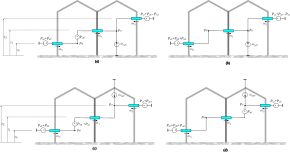

Ventilation of 2 zones (linear model)#
Problem#
A dwelling oriented north-south is divided into two zones: zone 1 on the south side and zone 2 on the north side. A mechanical ventilation system extracts a constant flow of \(\dot{V} = -200\) m³/h in zone 2 (Figure 1).

Figure 1. Ventilation of two zones.
The airflow constitutive laws are linear:
The north and south façades have the flow coefficients \(K_1 = K_3 = 50\) m³/(h·Pa), concentrated at \(z_1 = 1.0\) m and \(z_3 = 2.5\) m, respectively. The permeability of the opening in the partition between the zones has the flow coefficient \(K_2 = 20\) m³/(h·Pa) concentrated at 1.5 m.
The wind blows from North to South with speed \(v = 3\) m/s. The pressure coefficients are \(C_{p,n} = 0.9\) for the north face, \(C_{p,s} = -0.1\) for the south face.
The density of the outside air is 1.3 kg/m³ and the density of the air in both indoor zones is 1.2 kg/m³.
Gravity is 10 m/s² and the reference outside pressure is zero at 0 m.
Calculate the mass and the volumetric flow rates through the three openings.
import numpy as np
# Data
# ==================================
g = 10.0 # m/s², acceleration due to gravity
ρe, ρi = 1.3, 1.2 # kg/m³, density: indoor, outdoor
z0, z1, z2 = 1, 1.5, 2.5 # m, orrifice height
K0, K1, K2 = 50, 20, 50 # m³/(h·Pa), flow coeff.
Cpn, Cps = 0.9, -0.1 # -, presseure coef.
V_dot_VMC = -200 # m³/h, extraction mechanical ventilation
v = 3 # m/s, wind velocity
Pressure sources#
Static pressure#
\(P_{si} = - \rho_i \, g \, z\) - static pressure indoors
\(P_{so} = - \rho_o \, g \, z\) - static pressure outdoors
Ps0 = -ρe * g * z0 # Pa, static pressure out orrif. 0
Psi0 = -ρi * g * (z1 - z0) # Pa, static pressure in zone 0
Psi1 = -ρi * g * (z2 - z1) # Pa, static pressure in zone 1
Ps2 = -ρe * g * z2 # Pa, static pressure out orrif. 2
Dynamic pressure#
\(P_{d0} = C_{pn} \frac{1}{2} \, \rho_o \, v^2\) - north face
\(P_{d2} = C_{ps} \frac{1}{2} \, \rho_o \, v^2\) - south face
Pd0 = Cpn * 1 / 2 * ρe * v ** 2 # Pa, dynamic pressure out orrif. 1
Pd2 = Cps * 1 / 2 * ρe * v ** 2 # Pa, dynamic pressure out orrif. 2
Mass flow rate sources#
Mass flow rate extracted by mechanical ventilation is a mass flow source.
m_dot_MV = ρi * V_dot_VMC / 3600 # kg/s, mass flow extract rate mech. vent.
System of equations#
The flow networks are shown in Figure 2.

Figure 2. Flow network for ventilation of two zones. The differences between the figures consist in the reference height for the static pressures in zone 0 and 1. a) \(p_{iO}\) at \(z_0\); \(p_{i1}\) at \(z_1\), b) \(p_{iO}\) at \(z_1\); \(p_{i1}\) at \(z_1\), c) \(p_{iO}\) at \(z_0\); \(p_{i1}\) at \(z_2\), d) \(p_{iO}\) at \(z_1\); \(p_{i1}\) at \(z_2\).
To solve this direct problem, we will follow the procedure presented in the section From thermal networks to differential-algebraic equations.
Incidence matrix#
\(A = -\Delta = \begin{bmatrix} 1 & 0 \\ -1 & 1 \\ 0 & 1 \end{bmatrix}\) - incidence matrix; \(A_{kl} = \begin{cases}\phantom{-} 0 & \text{if branch } q_k \text{ is not connected to node } \theta_l \\ +1 & \text{if branch } q_k \text{ enters into node } \theta_l\\ -1 & \text{if branch } q_k \text{ gets out of node } \theta_l \end{cases}\)
A = np.array([[1, 0],
[-1, 1],
[0, 1]])
Conductance matrix#
\(G_0 = \rho_o K_0\), \(G_1 = \rho_i K_1\), \(G_2 = \rho_o K_2\),
\(G = \begin{bmatrix} G_0 & 0 & 0 \\ 0 & G_1 & 0 \\ 0 & 0 & G_2 \end{bmatrix}\) - diagonal matrix of conductances;
G = np.array([ρe, ρi, ρe]) * np.array([K0, K1, K2])
G = np.diag(G / 3600) # m³/(s·Pa), conductance matrix
Vector of pressure sources#
For the four cases shown in Figure 2, the vector \(b\) is:
a) \(b = [P_{s0} + P_{d0}, P_{si0}, P_{s2} + P_{d2} - P_{si1}]\)
b) \(b = [P_{s0} + P_{d0} + P_{si0}, 0, P_{s2} + P_{d2} - P_{si1}]\)
c) \(b = [P_{s0} + P_{d0}, P_{si0} + P_{si1}, P_{s2} + P_{d2}]\)
d) \(b = [P_{s0} + P_{d0} + P_{si0}, P_{si1}, P_{s2} + P_{d2}]\)
# (a) pressure pi0 at z0, pressure pi1 at z0
b_a = np.array([Ps0 + Pd0, Psi0, Ps2 + Pd2 - Psi1])
# (b) pressure pi0 at z0, pressure pi1 at z0
b_b = np.array([Ps0 + Pd0 + Psi0, 0, Ps2 + Pd2 - Psi1])
# (c) pressure pi0 at z0, pressure pi1 at z1
b_c = np.array([Ps0 + Pd0, Psi0 + Psi1, Ps2 + Pd2])
# (d) pressure pi0 at z0, pressure pi1 at z1
b_d = np.array([Ps0 + Pd0 + Psi0, Psi1, Ps2 + Pd2])
Vector of mass-flow sources#
\(f = [0, \dot{m}_{MV}]\)
f = np.array([0, m_dot_MV])
Solve for pressures#
Find the pressures in zone 0 and 1 at hight \(z_1\) and \(z_2\) and the mass flow rates.
def pi(b): # pressure inside the zone
p = np.linalg.inv(A.T @ G @ A) @ (A.T @ G @ b + f) # Pa
return p
Solutions#
Pressure pi0 at z0, pressure pi1 at z1#
# (a) pressure pi0 at z0, pressure pi1 at z1
print(f"pᵢ₀ (at z₀) = {pi(b_a)[0]:.2f} Pa; pᵢ₁ (at z₁) = {pi(b_a)[1]:.2f} Pa")
m_dot = G @ (-A @ pi(b_a) + b_a) # kg/s, mass flow rates
print(f"Mass flow rate: {np.round(m_dot * 3600, 1)} kg/h\n")
pᵢ₀ (at z₀) = -10.08 Pa; pᵢ₁ (at z₁) = -22.43 Pa
Mass flow rate: [152.4 152.4 87.6] kg/h
Pressure pi0 at z1, pressure pi1 at z1#
# (b) pressure pi0 at z1, pressure pi1 at z1
print(f"pᵢ₀ (at z₁) = {pi(b_b)[0]:.2f} Pa; pᵢ₁ (at z₁) = {pi(b_b)[1]:.2f} Pa")
m_dot = G @ (-A @ pi(b_b) + b_b) # kg/s, mass flow rates
print(f"Mass flow rate: {np.round(m_dot * 3600, 1)} kg/h\n")
pᵢ₀ (at z₁) = -16.08 Pa; pᵢ₁ (at z₁) = -22.43 Pa
Mass flow rate: [152.4 152.4 87.6] kg/h
Pressure pi0 at z0, pressure pi1 at z2#
# (c) pressure pi0 at z0, pressure pi1 at z2
print(f"pᵢ₀ (at z₀) = {pi(b_c)[0]:.2f} Pa; pᵢ₁ (at z₂) = {pi(b_c)[1]:.2f} Pa")
m_dot = G @ (-A @ pi(b_c) + b_c) # kg/s, mass flow rates
print(f"Mass flow rate: {np.round(m_dot * 3600, 1)} kg/h\n")
pᵢ₀ (at z₀) = -10.08 Pa; pᵢ₁ (at z₂) = -34.43 Pa
Mass flow rate: [152.4 152.4 87.6] kg/h
Pressure pi0 at z1, pressure pi1 at z2#
# (d) pressure pi0 at z1, pressure pi1 at z2
print(f"pᵢ₀ (at z₁) = {pi(b_d)[0]:.2f} Pa; pᵢ₁ (at z₂) = {pi(b_d)[1]:.2f} Pa")
m_dot = G @ (-A @ pi(b_d) + b_d) # kg/s, mass flow rates
print(f"Mass flow rate: {np.round(m_dot * 3600, 1)} kg/h\n")
pᵢ₀ (at z₁) = -16.08 Pa; pᵢ₁ (at z₂) = -34.43 Pa
Mass flow rate: [152.4 152.4 87.6] kg/h
Verify the mass balance#
The mass flow balance in zone 1.
print(f"Mass balance in node pᵢ₁: \n m₁ + m₂ = mᵥ; \n\
{3600 * m_dot[1]:.2f} + {3600 * m_dot[2]:.2f} = {-3600 * m_dot_MV:.2f} kg/h")
Mass balance in node pᵢ₁:
m₁ + m₂ = mᵥ;
152.44 + 87.56 = 240.00 kg/h
Volumetric flow rates#
The volumetric flow rate through the three openings.
V_dot = m_dot / np.array([ρe, ρi, ρe]) # m³/s, volum. flow rate
print(f"Volumetric flow rates: {np.round(V_dot * 3600, 2)} m³/h")
Volumetric flow rates: [117.26 127.04 67.35] m³/h